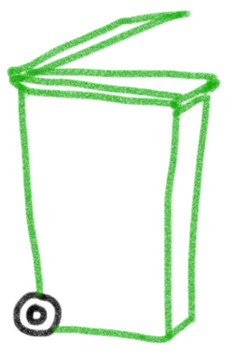
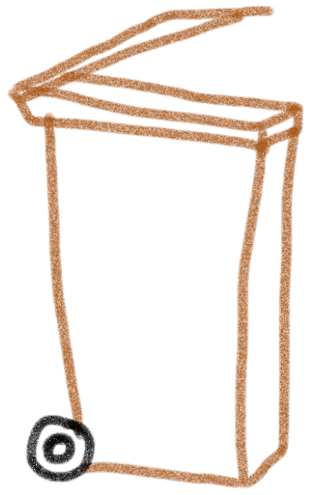

How to recycle?
Plastics(shampoo bottles, fruit punnets, meat trays, Milk bottles), Paper and card(juice cartons, envelopes, Magazines, Newpapers), Tins, cans and trays(deodorant cans, food tins, foil wrap, drinks cans, foil trays)
food waste, organic matter from your garden,leaves, small branches, fruit, veges, bread, meat, fish, tea bags, coffee granules
dfds
Glass(wine bottles, face cream pot, pasta sauce jars, after shave bottles, etc..)
dddddd
dddddd


No : food, clothes,shoes, wood, nappies, eletrical items, black refuse bags
No : clothes, shoes, nappies, black refuse bags, eletrical items, liquids, carrier bags, treated wood, soil
dfds

-
Buy recycled paper and print on both sides.
When using paper in the office, print on both sides of the sheet and recycle the paper when you are finished. By recycling one ton of paper, you can save 17 trees, almost 7,000 gallons of water and more than three cubic yards of landfill space. -
Recycle your outdated technology.
According to EPA, Americans throw out two million tons of e-waste each year. Avoid adding to that waste by recycling your old technology. For more information on electronic recycling, visit http://www.epa.gov/epaoswer/hazwaste/recycle/ecycling/donate. -
Make recycling bins readily available.
Make sure your home and office are outfitted with recycling bins for paper, plastic and metal. Keep them out in the open and label them appropriately. Sometimes the convenience factor is all that is needed. -
Recycle your empty ink and toner cartridges.
Almost eight cartridges are thrown out in the United States every second of every day. That's almost 700,000 cartridges per day. -
Buy remanufactured ink and toner cartridges.
Each remanufactured cartridge keeps approximately 2.5 pounds of metal and plastic out of landfills and saves about a half gallon of oil. -
Recycle old newspapers laying around the office.
When finished reading the newspaper, either leave it for someone else to read or recycle it. -
Look for the recycled option in all the products you buy.
It's not just paper that is recycled. -
Buy rechargeable batteries.
It takes 1,000 regular batteries to equal the lifespan of one rechargeable battery. When you are discarding your batteries, recycle them.